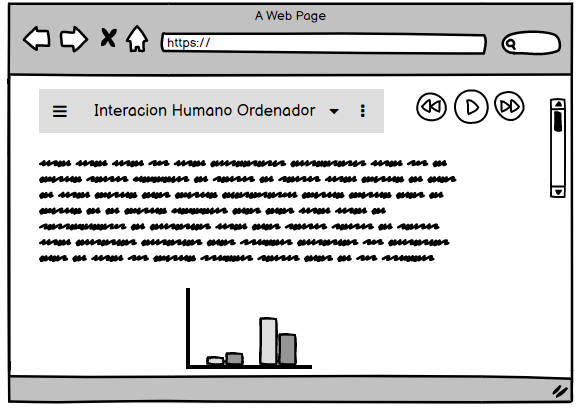

Programa: Ingenieria de sistemas
Fecha: 14-02-2021
cel:3214712043
El sitio tiene como proposito comunicar la interacion del humano y el ordenador en su vida diaria tanto laboral como personal...
Desde que la compañía IBM creo el PC 5150, empezó la interacción del ser humano con el ordenador (computador). Desde ese día, la ciencia y tecnología han permitido el desarrollo de este dispositivo que cada vez es más actualizado y que permite trabajar desde cualquier lugar del mundo sin importar el tipo que se tenga. La interacción de los humanos cada vez es más natural, ya que su uso es más funcional y seguro, se ha llegado a tal punto que las personas con discapacidades tanto cognitivas o físicas tienen acceso a un computador el cual cumple con sus necesidades, eliminando las barreras para personas en condición de discapacidad y permitiéndoles tener un desarrollo normal, esto es considerado como un avance muy importante e inclusivo.
